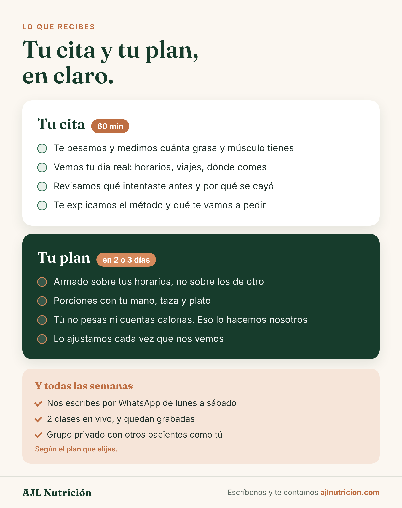
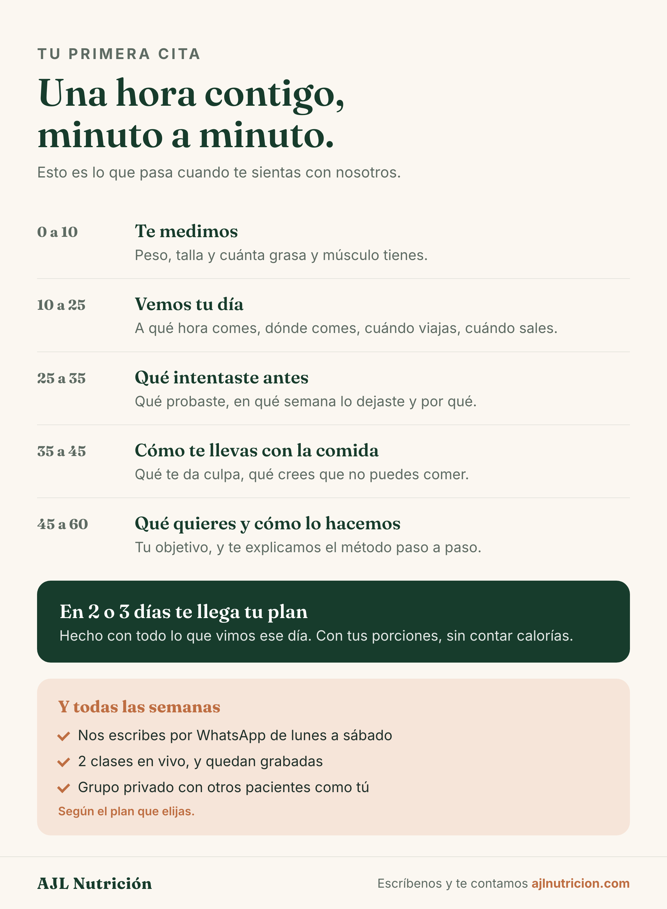
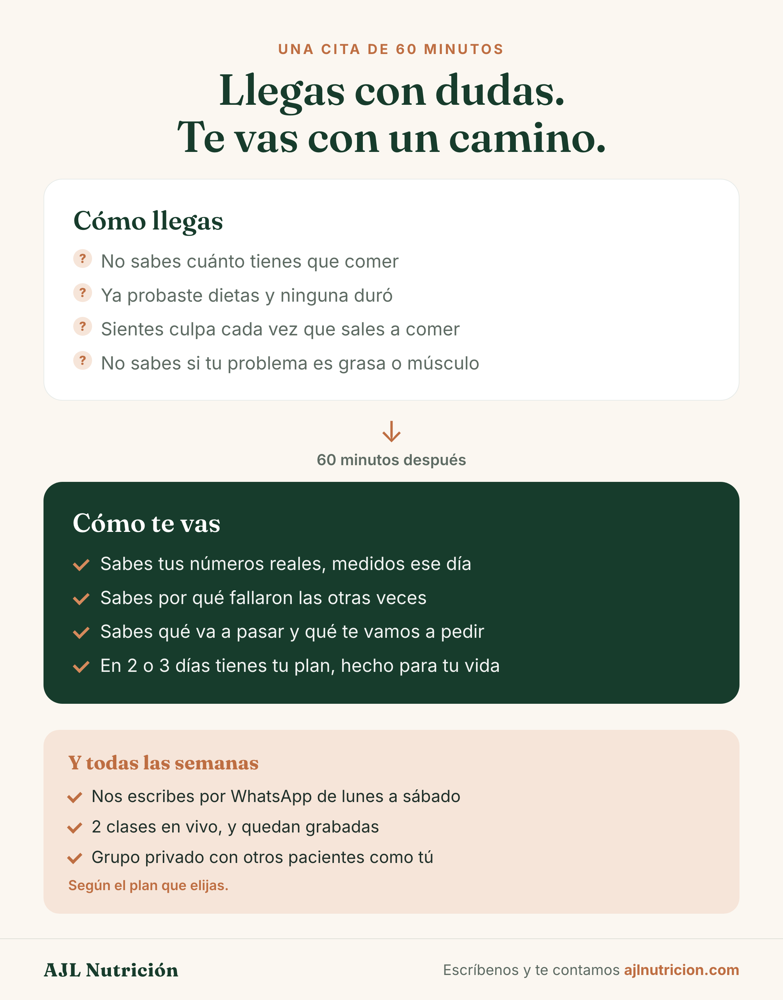
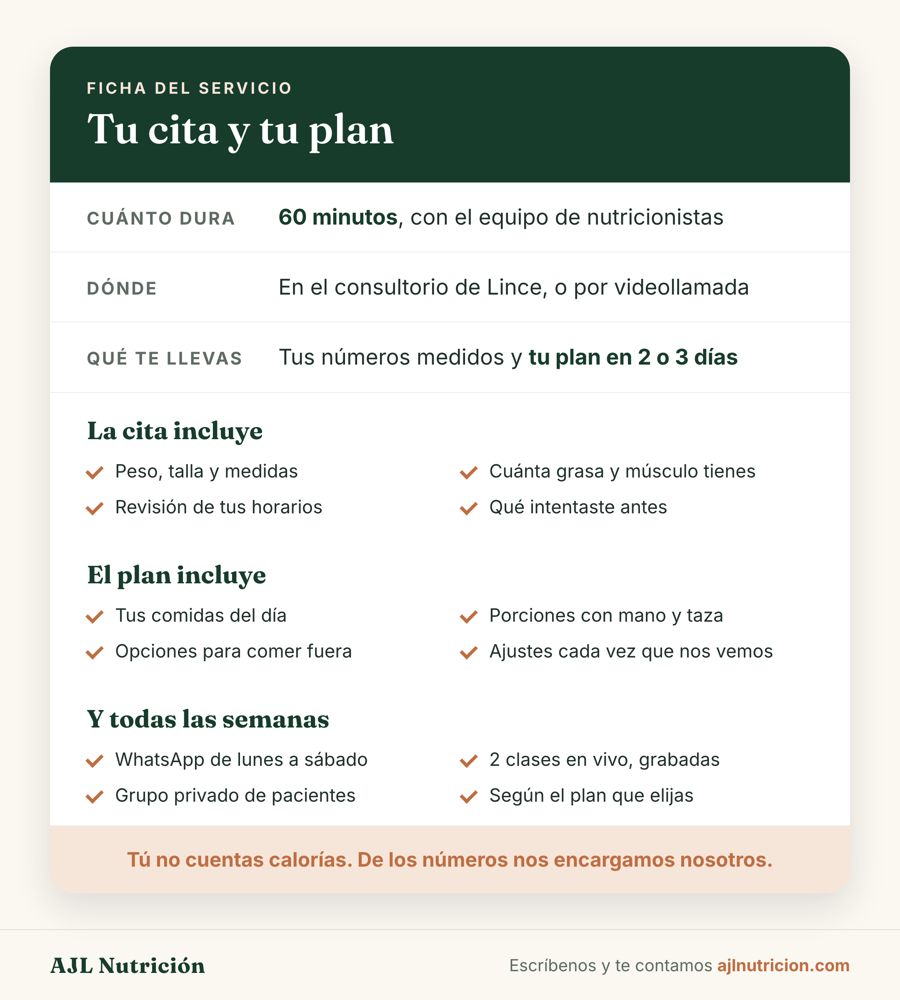
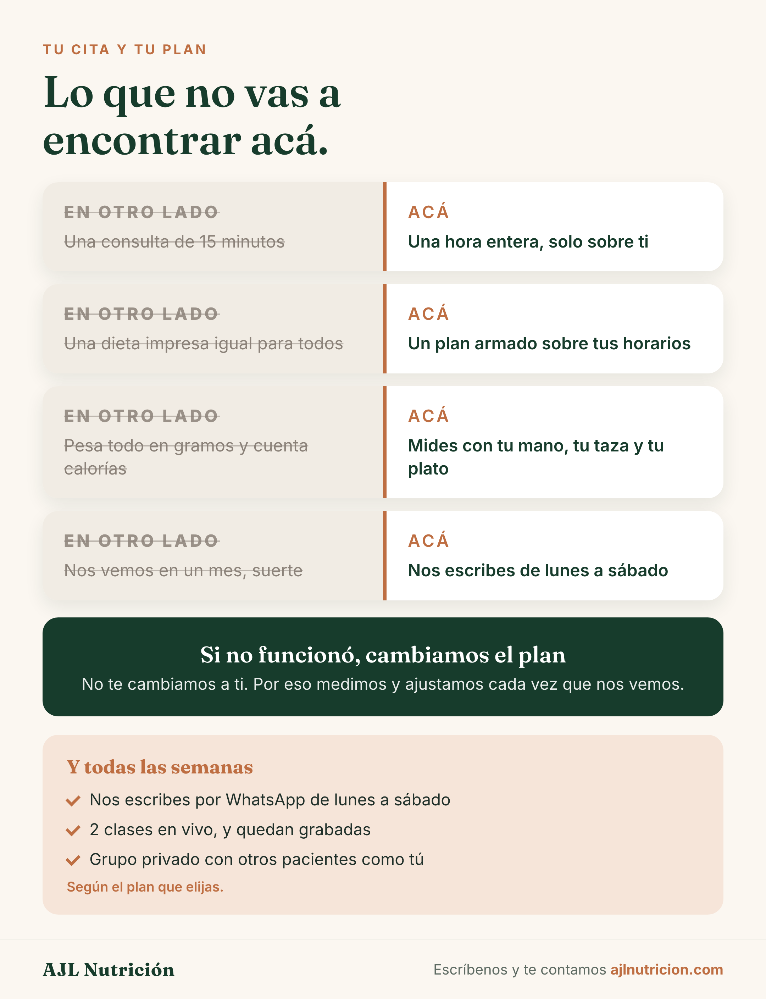
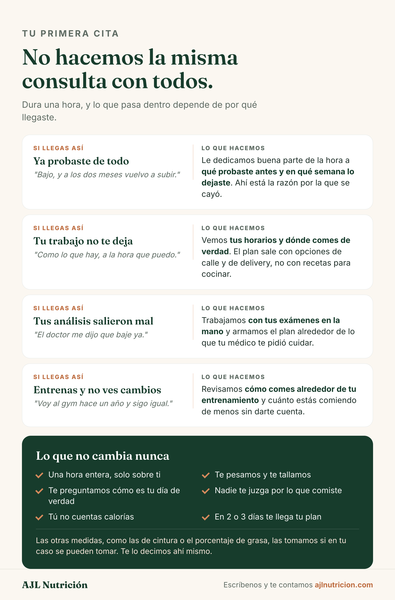

Todas en vertical, con la marca al pie, listas para mandar por WhatsApp como imagen. La sexta es la única que no promete mediciones que a veces no se pueden hacer.
Opción 1
Dos cajas La respuesta literal. Rápida de leer, fácil de mantener, sin gancho. Abrir sola →
Opción 2
Los 60 minutos La hora por tramos. La que mejor justifica el precio. Abrir sola →
Opción 3
Llegas y te vas La única emocional. Promete un cambio de estado en una hora. Abrir sola →
Opción 4
La ficha Formato ficha técnica. La mejor para responder por WhatsApp. La más fría. Abrir sola →
Opción 5
Lo que no vas a encontrar Contra la competencia, con lo ajeno tachado. La más persuasiva y la más arriesgada. Abrir sola →
Opción 6
No hacemos la misma consulta La adaptación como argumento. Cuatro perfiles, y solo promete peso y talla. Abrir sola →